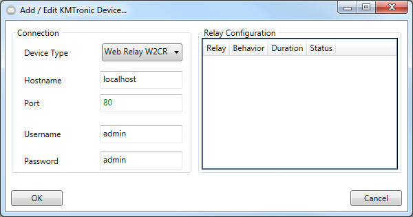
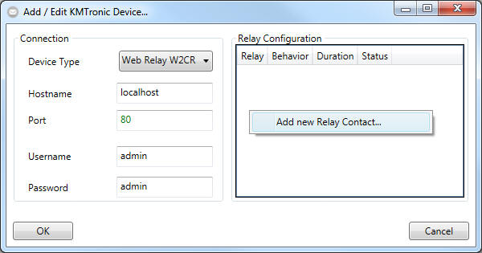
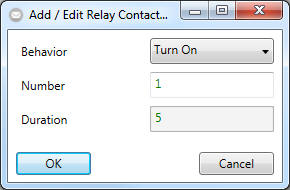

Creating Responses - New KMTronic Device

- Please select a supported type of device.
- Please provide the IP address or hostname along with the TCP port that
should be used to contact the Device.
- Continue to provide the login credentials.
- When finished, right click in a blank area within the "Relay
Configuration" Group Box on the right.

- Open the Configuration Dialog for the "Web Relay" Device by selecting
"Add new Relay Contact..."

- Select a Behavior for the relay contact:
- Turn On: Turn on the Relay Contact until it is turned off by a
second response.
- Turn Off: Turn off a previos turned on relay contact.
- Pulse: Turns On a Relay Contact and automatically off after the
specified duration.
- Toggle: Changes the relay state depending on its previos state: I.e.
Off if it was On before; On if it was Off before.
- Click on "OK" to add this relay contact to the device configuration
dialog.
- Repeat Steps 5 to 7 until finished.
- Click on "OK" in the Device configuration dialog to finish configuring
the device.